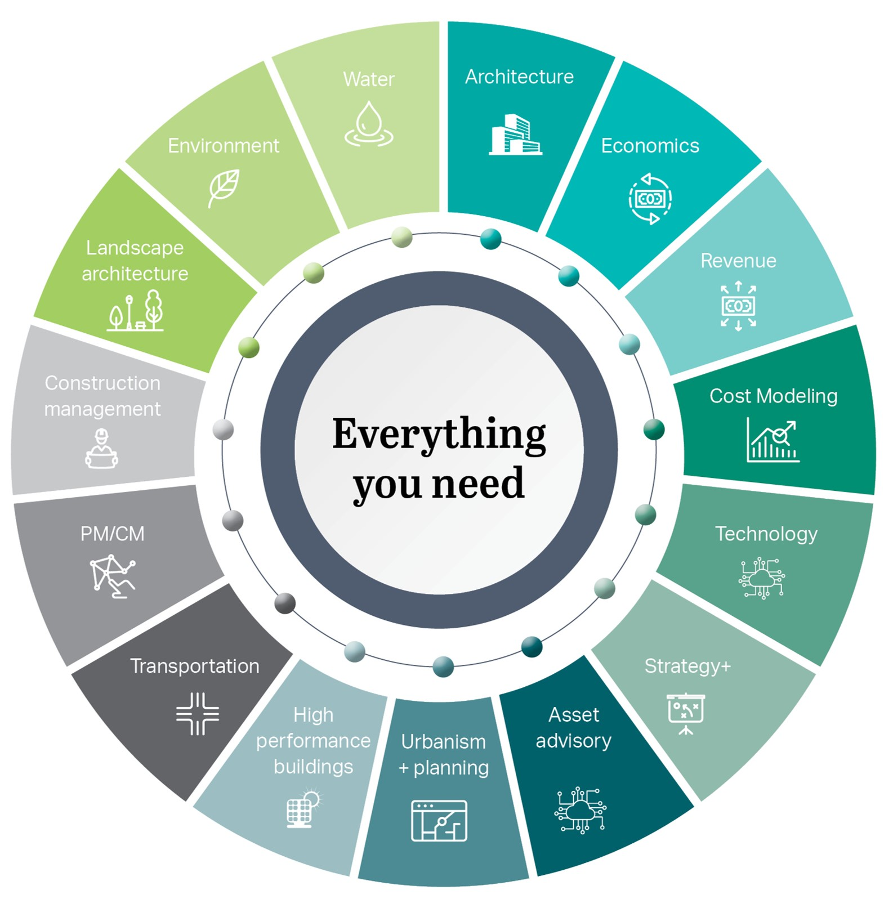

Our practice brings together working professionals from several different disciplines and study areas, lending our work an interdisciplinary perspective.
Our overall practice is therefore split into several specialties: Real Estate Advisory, Economic Development, Arts, Culture, Sports & Entertainment, Sustainable Economics, and Social Equity, Diversity & Inclusion.
Our Real Estate Advisory team focuses on market analysis, development feasibility, pro formas, developer solicitation & evaluation and real estate asset management. Notable clients include XYZ.
The Economic Development team has a hand in nearly every project we undertake. This team focuses on market and industry cluster analyses, economic development strategies and recovery plans (including COVID recovery), fiscal and economic impact, Transit-Oriented Development (TOD) and joint development. Prominent clients include the City of Chicago, City of San Francisco, City of Los Angeles, and more.
This team undertakes market and attendance analyses as well as financial fasibility and business planning for cultural attractions. A thorough review of economic, fiscal, and social impacts creates the forefront of this team. The team also develops cultural district economic development strategies and market-based program and concept development and physical planning. Prominent clients include the Field Museum in Chicago, IL, MeowWolf, and more.
The Sustainable Economics team focuses on climate action plans and resilience strategies. Creating business cases for resilience and formulating studies on the cost of inaction using multi-criteria prioritization studies as well as a triple bottom line analysis and cost-benefit analysis, this team also provides insights into funding and financing strategies. Key clients include the City of San Francisco, CA, city of Miami, FL, and the state of Florida (FL).
This team focuses on equity analytics, helping clients understand multiple metrics through the creation of equity dashboards and data vizualization tools. Key analyses include workforce assessments and development strategies, investment and asset mapping, and investemtn prioritization.